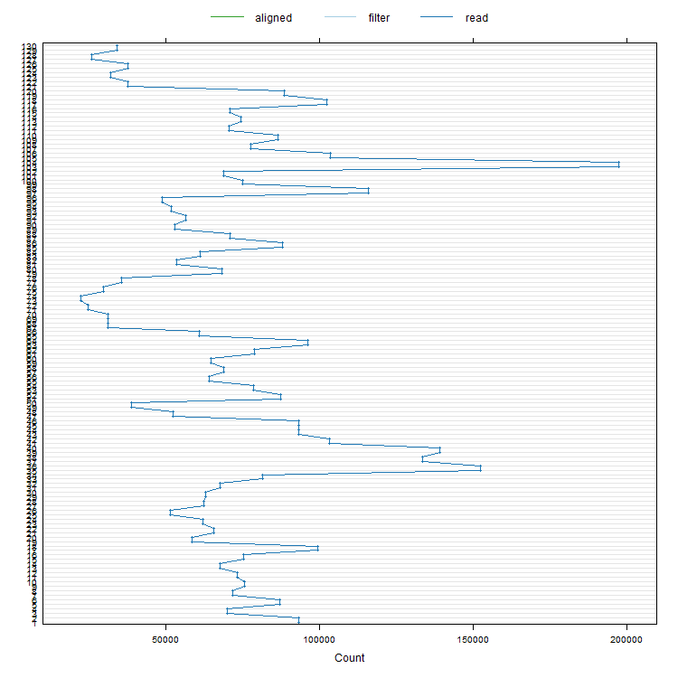
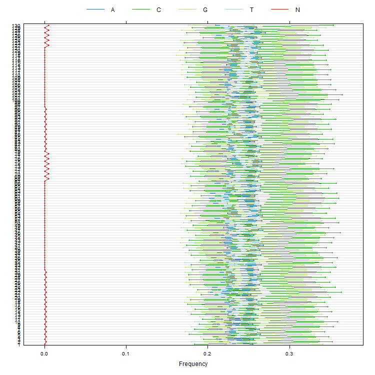
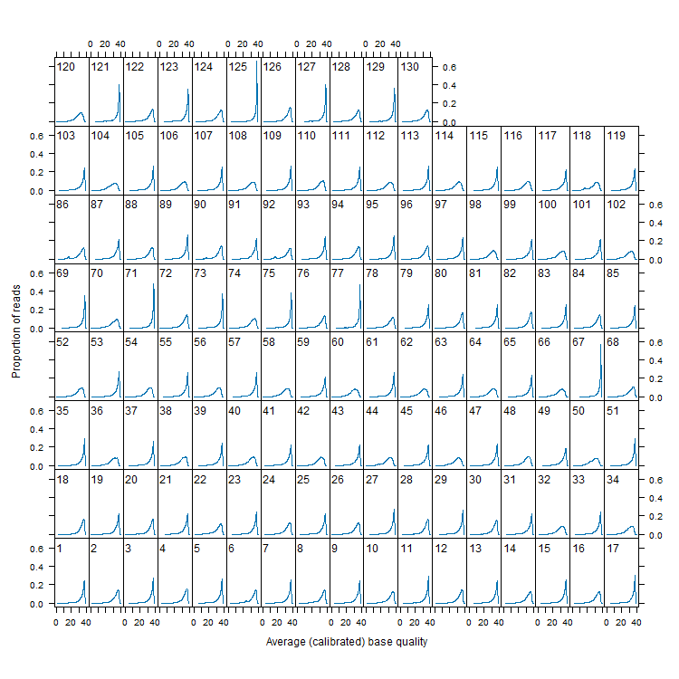
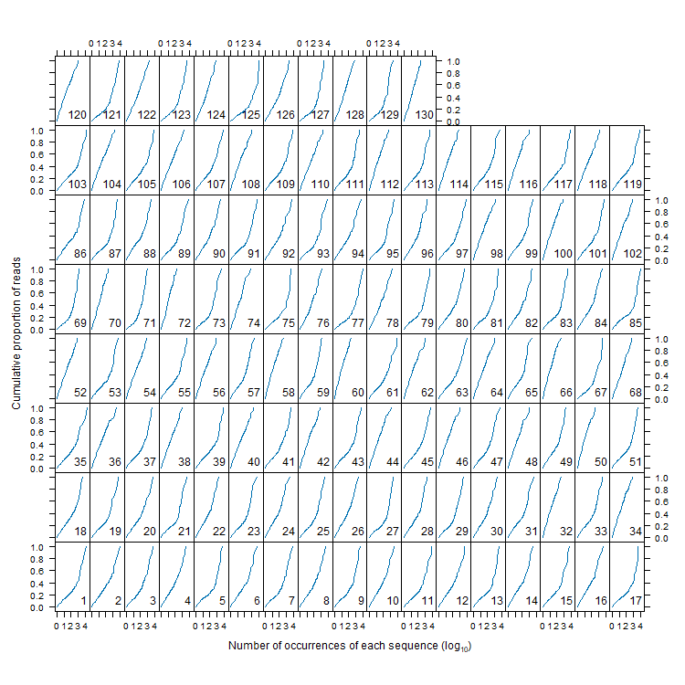
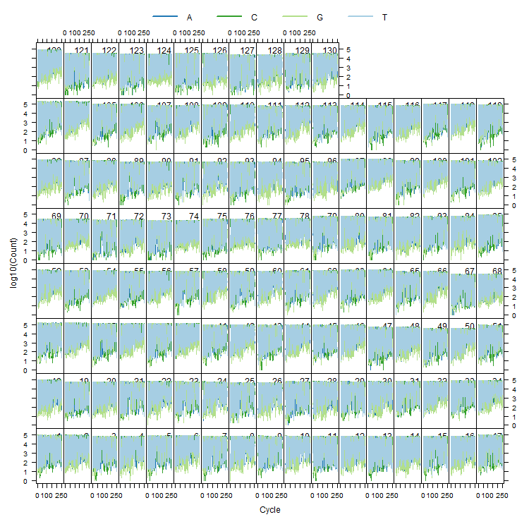
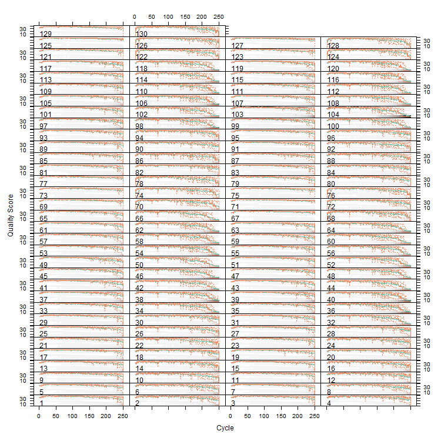

- ShortRead Quality Assessment
This document provides a quality assessment of Genome Analyzer results. The assessment is meant to complement, rather than replace, quality assessment available from the Genome Analyzer and its documentation. The narrative interpretation is based on experience of the package maintainer. It is applicable to results from the 'Genome Analyzer' hardware single-end module, configured to scan 300 tiles per lane. The 'control' results refered to below are from analysis of PhiX-174 sequence provided by Illumina.
Subsequent sections of the report use the following to identify figures and other information.
| Key | |
| Healthy01_23_L001_R1_001.fastq.gz | 1 |
| Healthy01_23_L001_R2_001.fastq.gz | 2 |
| Healthy02_18_L001_R1_001.fastq.gz | 3 |
| Healthy02_18_L001_R2_001.fastq.gz | 4 |
| Healthy03_9_L001_R1_001.fastq.gz | 5 |
| Healthy03_9_L001_R2_001.fastq.gz | 6 |
| Healthy04_1_L001_R1_001.fastq.gz | 7 |
| Healthy04_1_L001_R2_001.fastq.gz | 8 |
| Healthy05_12_L001_R1_001.fastq.gz | 9 |
| Healthy05_12_L001_R2_001.fastq.gz | 10 |
| Healthy06_7_L001_R1_001.fastq.gz | 11 |
| Healthy06_7_L001_R2_001.fastq.gz | 12 |
| Healthy07_3_L001_R1_001.fastq.gz | 13 |
| Healthy07_3_L001_R2_001.fastq.gz | 14 |
| Healthy08_14_L001_R1_001.fastq.gz | 15 |
| Healthy08_14_L001_R2_001.fastq.gz | 16 |
| Healthy09_5_L001_R1_001.fastq.gz | 17 |
| Healthy09_5_L001_R2_001.fastq.gz | 18 |
| Healthy10_24_L001_R1_001.fastq.gz | 19 |
| Healthy10_24_L001_R2_001.fastq.gz | 20 |
| Healthy11_10_L001_R1_001.fastq.gz | 21 |
| Healthy11_10_L001_R2_001.fastq.gz | 22 |
| Healthy12_11_L001_R1_001.fastq.gz | 23 |
| Healthy12_11_L001_R2_001.fastq.gz | 24 |
| Healthy13_15_L001_R1_001.fastq.gz | 25 |
| Healthy13_15_L001_R2_001.fastq.gz | 26 |
| Healthy14_16_L001_R1_001.fastq.gz | 27 |
| Healthy14_16_L001_R2_001.fastq.gz | 28 |
| Healthy15_19_L001_R1_001.fastq.gz | 29 |
| Healthy15_19_L001_R2_001.fastq.gz | 30 |
| Healthy16_9_L001_R1_001.fastq.gz | 31 |
| Healthy16_9_L001_R2_001.fastq.gz | 32 |
| Healthy17_12_L001_R1_001.fastq.gz | 33 |
| Healthy17_12_L001_R2_001.fastq.gz | 34 |
| Healthy18_8_L001_R1_001.fastq.gz | 35 |
| Healthy18_8_L001_R2_001.fastq.gz | 36 |
| Healthy19_2_L001_R1_001.fastq.gz | 37 |
| Healthy19_2_L001_R2_001.fastq.gz | 38 |
| Healthy20_1_L001_R1_001.fastq.gz | 39 |
| Healthy20_1_L001_R2_001.fastq.gz | 40 |
| Healthy21_22_L001_R1_001.fastq.gz | 41 |
| Healthy21_22_L001_R2_001.fastq.gz | 42 |
| Healthy22_15_L001_R1_001.fastq.gz | 43 |
| Healthy22_15_L001_R2_001.fastq.gz | 44 |
| Healthy23_14_L001_R1_001.fastq.gz | 45 |
| Healthy23_14_L001_R2_001.fastq.gz | 46 |
| Healthy24_24_L001_R1_001.fastq.gz | 47 |
| Healthy24_24_L001_R2_001.fastq.gz | 48 |
| Healthy25_26_L001_R1_001.fastq.gz | 49 |
| Healthy25_26_L001_R2_001.fastq.gz | 50 |
| Healthy26_4_L001_R1_001.fastq.gz | 51 |
| Healthy26_4_L001_R2_001.fastq.gz | 52 |
| Healthy27_29_L001_R1_001.fastq.gz | 53 |
| Healthy27_29_L001_R2_001.fastq.gz | 54 |
| Healthy28_3_L001_R1_001.fastq.gz | 55 |
| Healthy28_3_L001_R2_001.fastq.gz | 56 |
| Healthy29_17_L001_R1_001.fastq.gz | 57 |
| Healthy29_17_L001_R2_001.fastq.gz | 58 |
| Healthy30_19_L001_R1_001.fastq.gz | 59 |
| Healthy30_19_L001_R2_001.fastq.gz | 60 |
| Healthy31_20_L001_R1_001.fastq.gz | 61 |
| Healthy31_20_L001_R2_001.fastq.gz | 62 |
| Healthy32_27_L001_R1_001.fastq.gz | 63 |
| Healthy32_27_L001_R2_001.fastq.gz | 64 |
| Healthy33_10_L001_R1_001.fastq.gz | 65 |
| Healthy33_10_L001_R2_001.fastq.gz | 66 |
| Healthy34_8_L001_R1_001.fastq.gz | 67 |
| Healthy34_8_L001_R2_001.fastq.gz | 68 |
| Healthy35_7_L001_R1_001.fastq.gz | 69 |
| Healthy35_7_L001_R2_001.fastq.gz | 70 |
| Healthy36_9_L001_R1_001.fastq.gz | 71 |
| Healthy36_9_L001_R2_001.fastq.gz | 72 |
| Healthy37_1_L001_R1_001.fastq.gz | 73 |
| Healthy37_1_L001_R2_001.fastq.gz | 74 |
| Healthy38_11_L001_R1_001.fastq.gz | 75 |
| Healthy38_11_L001_R2_001.fastq.gz | 76 |
| Healthy39_10_L001_R1_001.fastq.gz | 77 |
| Healthy39_10_L001_R2_001.fastq.gz | 78 |
| MS01_8_L001_R1_001.fastq.gz | 79 |
| MS01_8_L001_R2_001.fastq.gz | 80 |
| MS02_13_L001_R1_001.fastq.gz | 81 |
| MS02_13_L001_R2_001.fastq.gz | 82 |
| MS03_17_L001_R1_001.fastq.gz | 83 |
| MS03_17_L001_R2_001.fastq.gz | 84 |
| MS04_22_L001_R1_001.fastq.gz | 85 |
| MS04_22_L001_R2_001.fastq.gz | 86 |
| MS05_20_L001_R1_001.fastq.gz | 87 |
| MS05_20_L001_R2_001.fastq.gz | 88 |
| MS06_21_L001_R1_001.fastq.gz | 89 |
| MS06_21_L001_R2_001.fastq.gz | 90 |
| MS07_4_L001_R1_001.fastq.gz | 91 |
| MS07_4_L001_R2_001.fastq.gz | 92 |
| MS08_2_L001_R1_001.fastq.gz | 93 |
| MS08_2_L001_R2_001.fastq.gz | 94 |
| MS09_6_L001_R1_001.fastq.gz | 95 |
| MS09_6_L001_R2_001.fastq.gz | 96 |
| MS10_11_L001_R1_001.fastq.gz | 97 |
| MS10_11_L001_R2_001.fastq.gz | 98 |
| MS11_13_L001_R1_001.fastq.gz | 99 |
| MS11_13_L001_R2_001.fastq.gz | 100 |
| MS12_25_L001_R1_001.fastq.gz | 101 |
| MS12_25_L001_R2_001.fastq.gz | 102 |
| MS13_7_L001_R1_001.fastq.gz | 103 |
| MS13_7_L001_R2_001.fastq.gz | 104 |
| MS14_28_L001_R1_001.fastq.gz | 105 |
| MS14_28_L001_R2_001.fastq.gz | 106 |
| MS15_23_L001_R1_001.fastq.gz | 107 |
| MS15_23_L001_R2_001.fastq.gz | 108 |
| MS16_21_L001_R1_001.fastq.gz | 109 |
| MS16_21_L001_R2_001.fastq.gz | 110 |
| MS17_30_L001_R1_001.fastq.gz | 111 |
| MS17_30_L001_R2_001.fastq.gz | 112 |
| MS18_16_L001_R1_001.fastq.gz | 113 |
| MS18_16_L001_R2_001.fastq.gz | 114 |
| MS19_5_L001_R1_001.fastq.gz | 115 |
| MS19_5_L001_R2_001.fastq.gz | 116 |
| MS20_6_L001_R1_001.fastq.gz | 117 |
| MS20_6_L001_R2_001.fastq.gz | 118 |
| MS21_18_L001_R1_001.fastq.gz | 119 |
| MS21_18_L001_R2_001.fastq.gz | 120 |
| MS22_2_L001_R1_001.fastq.gz | 121 |
| MS22_2_L001_R2_001.fastq.gz | 122 |
| MS23_3_L001_R1_001.fastq.gz | 123 |
| MS23_3_L001_R2_001.fastq.gz | 124 |
| MS24_4_L001_R1_001.fastq.gz | 125 |
| MS24_4_L001_R2_001.fastq.gz | 126 |
| MS25_5_L001_R1_001.fastq.gz | 127 |
| MS25_5_L001_R2_001.fastq.gz | 128 |
| MS26_6_L001_R1_001.fastq.gz | 129 |
| MS26_6_L001_R2_001.fastq.gz | 130 |
Read counts. Filtered and aligned read counts are reported relative to the total number of reads (clusters; if only filtered or aligned reads are available, total read count is reported). Consult Genome Analyzer documentation for official guidelines. From experience, very good runs of the Genome Analyzer 'control' lane result in 25-30 million reads, with up to 95% passing pre-defined filters.
ShortRead:::.ppnCount(qa[["readCounts"]])
| read | filter | aligned | |
| 1 | 93191 | ||
| 2 | 93191 | ||
| 3 | 69892 | ||
| 4 | 69892 | ||
| 5 | 86924 | ||
| 6 | 86924 | ||
| 7 | 71599 | ||
| 8 | 71599 | ||
| 9 | 75428 | ||
| 10 | 75428 | ||
| 11 | 73276 | ||
| 12 | 73276 | ||
| 13 | 67614 | ||
| 14 | 67614 | ||
| 15 | 75236 | ||
| 16 | 75236 | ||
| 17 | 99330 | ||
| 18 | 99330 | ||
| 19 | 58568 | ||
| 20 | 58568 | ||
| 21 | 65441 | ||
| 22 | 65441 | ||
| 23 | 61980 | ||
| 24 | 61980 | ||
| 25 | 51547 | ||
| 26 | 51547 | ||
| 27 | 62256 | ||
| 28 | 62256 | ||
| 29 | 63030 | ||
| 30 | 63030 | ||
| 31 | 67569 | ||
| 32 | 67569 | ||
| 33 | 81419 | ||
| 34 | 81419 | ||
| 35 | 152537 | ||
| 36 | 152537 | ||
| 37 | 133580 | ||
| 38 | 133580 | ||
| 39 | 139174 | ||
| 40 | 139174 | ||
| 41 | 103271 | ||
| 42 | 103271 | ||
| 43 | 93090 | ||
| 44 | 93090 | ||
| 45 | 93131 | ||
| 46 | 93131 | ||
| 47 | 52195 | ||
| 48 | 52195 | ||
| 49 | 38879 | ||
| 50 | 38879 | ||
| 51 | 87461 | ||
| 52 | 87461 | ||
| 53 | 78470 | ||
| 54 | 78470 | ||
| 55 | 63983 | ||
| 56 | 63983 | ||
| 57 | 68756 | ||
| 58 | 68756 | ||
| 59 | 64564 | ||
| 60 | 64564 | ||
| 61 | 78686 | ||
| 62 | 78686 | ||
| 63 | 96194 | ||
| 64 | 96194 | ||
| 65 | 60948 | ||
| 66 | 60948 | ||
| 67 | 30970 | ||
| 68 | 30970 | ||
| 69 | 31209 | ||
| 70 | 31209 | ||
| 71 | 24555 | ||
| 72 | 24555 | ||
| 73 | 22150 | ||
| 74 | 22150 | ||
| 75 | 29691 | ||
| 76 | 29691 | ||
| 77 | 35662 | ||
| 78 | 35662 | ||
| 79 | 68140 | ||
| 80 | 68140 | ||
| 81 | 53461 | ||
| 82 | 53461 | ||
| 83 | 61281 | ||
| 84 | 61281 | ||
| 85 | 87898 | ||
| 86 | 87898 | ||
| 87 | 70909 | ||
| 88 | 70909 | ||
| 89 | 52897 | ||
| 90 | 52897 | ||
| 91 | 56434 | ||
| 92 | 56434 | ||
| 93 | 51589 | ||
| 94 | 51589 | ||
| 95 | 48809 | ||
| 96 | 48809 | ||
| 97 | 115913 | ||
| 98 | 115913 | ||
| 99 | 75004 | ||
| 100 | 75004 | ||
| 101 | 68687 | ||
| 102 | 68687 | ||
| 103 | 197566 | ||
| 104 | 197566 | ||
| 105 | 103592 | ||
| 106 | 103592 | ||
| 107 | 77758 | ||
| 108 | 77758 | ||
| 109 | 86577 | ||
| 110 | 86577 | ||
| 111 | 70472 | ||
| 112 | 70472 | ||
| 113 | 74442 | ||
| 114 | 74442 | ||
| 115 | 70903 | ||
| 116 | 70903 | ||
| 117 | 102497 | ||
| 118 | 102497 | ||
| 119 | 88401 | ||
| 120 | 88401 | ||
| 121 | 37545 | ||
| 122 | 37545 | ||
| 123 | 31905 | ||
| 124 | 31905 | ||
| 125 | 37465 | ||
| 126 | 37465 | ||
| 127 | 25754 | ||
| 128 | 25754 | ||
| 129 | 33998 | ||
| 130 | 33998 |
ShortRead:::.plotReadCount(qa)
Base call frequency over all reads. Base frequencies should accurately reflect the frequencies of the regions sequenced.
ShortRead:::.plotNucleotideCount(qa)
Overall read quality. Lanes with consistently good quality reads have strong peaks at the right of the panel.
df <- qa[["readQualityScore"]] ShortRead:::.plotReadQuality(df[df$type=="read",])
These curves show how coverage is distributed amongst reads. Ideally, the cumulative proportion of reads will transition sharply from low to high.
Portions to the left of the transition might correspond roughly to sequencing or sample processing errors, and correspond to reads that are represented relatively infrequently. 10-15%; of reads in a typical Genome Analyzer 'control' lane fall in this category.
Portions to the right of the transition represent reads that are over-represented compared to expectation. These might include inadvertently sequenced primer or adapter sequences, sequencing or base calling artifacts (e.g., poly-A reads), or features of the sample DNA (highly repeated regions) not adequately removed during sample preparation. About 5% of Genome Analyzer 'control' lane reads fall in this category.
Broad transitions from low to high cumulative proportion of reads may reflect sequencing bias or (perhaps intentional) features of sample preparation resulting in non-uniform coverage. the transition is about 5 times as wide as expected from uniform sampling across the Genome Analyzer 'control' lane.
df <- qa[["sequenceDistribution"]] ShortRead:::.plotReadOccurrences(df[df$type=="read",], cex=.5)
Common duplicate reads might provide clues to the source of over-represented sequences. Some of these reads are filtered by the alignment algorithms; other duplicate reads might point to sample preparation issues.
ShortRead:::.freqSequences(qa, "read")
| sequence | count | lane |
| TACGGAAGGTCCGGGCGTTATCCGGATTTATTGGGTTTAAAGGGAGCGTAGGCCGGAGATTAAGCGTGTTGTGAAATGTAGACGCTCAACGTCTGCACTGCAGCGCGAACTGGTTTCCTTGAGTACGCACAAAGTGGGCGGAATTCGTGGTGTAGCGGTGAAATGCTTAGATATCACGAAGAACTCCGATTGCGAAGGCAGCTCACTGGAGCGCAACTGACGCTGAAGCTCGAAAGTGCGGGTATCGAACA | 18963 | 35 |
| TACGGAGGATGCGAGCGTTATCCGGATTTATTGGGTTTAAAGGGAGCGCAGGCTGCGAGGCAAGTCAGCGGTCAAATGTCGGGGCTCAACCCCGGCCTGCCGTTGAAACTGTCTTGCTAGAGTTCGAGTGAGGTATGCGGAATGCGTTGTGTAGCGGTGAAATGCATAGATATGACGCAGAACTCCGATTGCGAAGGCAGCATACCAACTCGCGACTGACGCTGAGGCTCGAAAGCGTGGGTATCGAACAG | 12441 | 103 |
| TACGGAGGATCCGAGCGTTATCCGGATTTATTGGGTTTAAAGGGAGCGTAGGTGGATTGTTAAGTCAGTTGTGAAAGTTTGCGGCTCAACCGTAAAATTGCAGTTGAAACTGGCAGTCTTGAGTACAGTAGAGGTGGGCGGAATTCGTGGTGTAGCGGTGAAATGCTTAGATATCACGAAGAACTCCGATTGCGAAGGCAGCTCACTAGACTGTTACTGACACTGATGCTCGAAAGTGTGGGTATCAAACA | 12147 | 103 |
| TACGGAGGATCCGAGCGTTATCCGGATTTATTGGGTTTAAAGGGAGCGTAGATGGATGTTTAAGTCAGTTGTGAAAGTTTGCGGCTCAACCGTAAAATTGCAGTTGATACTGGATATCTTGAGTGCAGTTGAGGCAGGCGGAATTCGTGGTGTAGCGGTGAAATGCTTAGATATCACGAAGAACTCCGATTGCGAAGGCAGCCTGCTAAGCTGCAACTGACATTGAGGCTCGAAAGTGTGGGTATCAAACA | 11823 | 1 |
| TACGGAAGGTCCGGGCGTTATCCGGATTTATTGGGTTTAAAGGGAGCGTAGGCCGGAGATTAAGCGTGTTGTGAAATGTAGACGCTCAACGTCTGCACTGCAGCGCGAACTGGTTTCCTTGAGTACGCACAAAGTGGGCGGAATTCGTGGTGTAGCGGTGAAATGCTTAGATATCACGAAGAACTCCGATTGCGAAGGCAGCTCACTGGAGCGCAACTGACGCTGAAGCTCGAAAGTGCGGGTATCGAACA | 11449 | 125 |
| TACGGAAGGTCCGGGCGTTATCCGGATTTATTGGGTTTAAAGGGAGCGTAGGCCGGAGATTAAGCGTGTTGTGAAATGTAGATGCTCAACATCTGCACTGCAGCGCGAACTGGTTTCCTTGAGTACGCACAAAGTGGGCGGAATTCGTGGTGTAGCGGTGAAATGCTTAGATATCACGAAGAACTCCGATTGCGAAGGCAGCTCACTGGAGCGCAACTGACGCTGAAGCTCGAAAGTGCGGGTATCGAACA | 11225 | 35 |
| CCTGTTTGATACCCACACTTTCGAGCCTCAATGTCAGTTGCAGCTTAGCAGGCTGCCTTCGCAATCGGAGTTCTTCGTGATATCTAAGCATTTCACCGCTACACCACGAATTCCGCCTGCCTCAACTGCACTCAAGATATCCAGTATCAACTGCAATTTTACGGTTGAGCCGCAAACTTTCACAACTGACTTAAACATCCATCTACGCTCCCTTTAAACCCAATAAATCCGGATAACGCTCGGATCCTCCG | 10961 | 2 |
| TACGGAGGATCCGAGCGTTATCCGGATTTATTGGGTTTAAAGGGAGCGTAGATGGATGTTTAAGTCAGTTGTGAAAGTTTGCGGCTCAACCGTAAAATTGCAGTTGATACTGGATATCTTGAGTGCAGTTGAGGCAGGCGGAATTCGTGGTGTAGCGGTGAAATGCTTAGATATCACGAAGAACTCCGATTGCGAAGGCAGCCTGCTAAGCTGCAACTGACATTGAGGCTCGAAAGTGTGGGTATCAAACA | 10110 | 85 |
| TACGGAAGGTCCGGGCGTTATCCGGATTTATTGGGTTTAAAGGGAGCGTAGGCCGGAGATTAAGCGTGTTGTGAAATGTAGACGCTCAACGTCTGCACTGCAGCGCGAACTGGTTTCCTTGAGTACGCACAAAGTGGGCGGAATTCGTGGTGTAGCGGTGAAATGCTTAGATATCACGAAGAACTCCGATTGCGAAGGCAGCTCACTGGAGCGCAACTGACGCTGAAGCTCGAAAGTGCGGGTATCGAACA | 9598 | 77 |
| TACGGAGGATGCGAGCGTTATCCGGATTTATTGGGTTTAAAGGGAGCGCAGACGGGTCGTTAAGTCAGCTGTGAAAGTTTGGGGCTCAACCTTAAAATTGCAGTTGATACTGGCGTCCTTGAGTGCGGTTGAGGTGTGCGGAATTCGTGGTGTAGCGGTGAAATGCTTAGATATCACGAAGAACTCCGATTGCGAAGGCAGCACACTAAGCCGTAACTGACGTTCATGCTCGAAAGTGTGGGTATCAAACA | 9207 | 63 |
| TACGGAGGATCCGAGCGTTATCCGGATTTATTGGGTTTAAAGGGAGCGTAGATGGATGTTTAAGTCAGTTGTGAAAGTTTGCGGCTCAACCGTAAAATTGCAGTTGATACTGGATATCTTGAGTGCAGTTGAGGCAGGCGGAATTCGTGGTGTAGCGGTGAAATGCTTAGATATCACGAAGAACTCCGATTGCGAAGGCAGCCTGCTAAGCTGCAACTGACATTGAGGCTCGAAAGTGTGGGTATCAAACA | 8366 | 109 |
| TACGGAGGATCCGAGCGTTATCCGGATTTATTGGGTTTAAAGGGAGCGTAGATGGATGTTTAAGTCAGTTGTGAAAGTTTGCGGCTCAACCGTAAAATTGCAGTTGATACTGGATATCTTGAGTGCAGTTGAGGCAGGCGGAATTCGTGGTGTAGCGGTGAAATGCTTAGATATCACGAAGAACTCCGATTGCGAAGGCAGCCTGCTAAGCTGCAACTGACATTGAGGCTCGAAAGTGTGGGTATCAAACA | 8320 | 39 |
| TACGGAGGATCCGAGCGTTATCCGGATTTATTGGGTTTAAAGGGAGCGTAGATGGATGTTTAAGTCAGTTGTGAAAGTTTGCGGCTCAACCGTAAAATTGCAGTTGATACTGGATATCTTGAGTGCAGTTGAGGCAGGCGGAATTCGTGGTGTAGCGGTGAAATGCTTAGATATCACGAAGAACTCCGATTGCGAAGGCAGCCTGCTAAGCTGCAACTGACATTGAGGCTCGAAAGTGTGGGTATCAAACA | 8100 | 105 |
| TACGGAGGATCCGAGCGTTATCCGGATTTATTGGGTTTAAAGGGAGCGTAGATGGATGTTTAAGTCAGTTGTGAAAGTTTGCGGCTCAACCGTAAAATTGCAGTTGATACTGGATATCTTGAGTGCAGTTGAGGCAGGCGGAATTCGTGGTGTAGCGGTGAAATGCTTAGATATCACGAAGAACTCCGATTGCGAAGGCAGCCTGCTAAGCTGCAACTGACATTGAGGCTCGAAAGTGTGGGTATCAAACA | 8006 | 117 |
| TACGGAAGGTCCGGGCGTTATCCGGATTTATTGGGTTTAAAGGGAGCGTAGGCCGGAGATTAAGCGTGTTGTGAAATGTAGACGCTCAACGTCTGCACTGCAGCGCGAACTGGTTTCCTTGAGTACGCACAAAGTGGGCGGAATTCGTGGTGTAGCGGTGAAATGCTTAGATATCACGAAGAACTCCGATTGCGAAGGCAGCTCACTGGAGCGCAACTGACGCTGAAGCTCGAAAGTGCGGGTATCGAACA | 7758 | 61 |
| TACGTATGGTGCAAGCGTTATCCGGATTTACTGGGTGTAAAGGGAGCGCAGGCGGTGCGGCAAGTCTGATGTGAAAGCCCGGGGCTCAACCCCGGTACTGCATTGGAAACTGTCGTACTAGAGTGTCGGAGGGGTAAGCGGAATTCCTAGTGTAGCGGTGAAATGCGTAGATATTAGGAGGAACACCAGTGGCGAAGGCGGCTTACTGGACGATAACTGACGCTGAGGCTCGAAAGCGTGGGGAGCAAACA | 7748 | 103 |
| CCTGTTTGATACCCACACTTTCGAGCCTCAATGTCAGTTGCAGCTTAGCAGGCTGCCTTCGCAATCGGAGTTCTTCGTGATATCTAAGCATTTCACCGCTACACCACGAATTCCGCCTGCCTCAACTGCACTCAAGATATCCAGTATCAACTGCAATTTTACGGTTGAGCCGCAAACTTTCACAACTGACTTAAACATCCATCTACGCTCCCTTTAAACCCAATAAATCCGGATAACGCTCGGATCCTCCG | 7462 | 86 |
| TACGGAAGGTCCGGGCGTTATCCGGATTTATTGGGTTTAAAGGGAGCGTAGGCCGGAGATTAAGCGTGTTGTGAAATGTAGATGCTCAACATCTGCACTGCAGCGCGAACTGGTTTCCTTGAGTACGCACAAAGTGGGCGGAATTCGTGGTGTAGCGGTGAAATGCTTAGATATCACGAAGAACTCCGATTGCGAAGGCAGCTCACTGGAGCGCAACTGACGCTGAAGCTCGAAAGTGCGGGTATCGAACA | 7396 | 11 |
| TACGGAGGATCCGAGCGTTATCCGGATTTATTGGGTTTAAAGGGAGCGTAGATGGATGTTTAAGTCAGTTGTGAAAGTTTGCGGCTCAACCGTAAAATTGCAGTTGATACTGGATATCTTGAGTGCAGTTGAGGCAGGCGGAATTCGTGGTGTAGCGGTGAAATGCTTAGATATCACGAAGAACTCCGATTGCGAAGGCAGCCTGCTAAGCTGCAACTGACATTGAGGCTCGAAAGTGTGGGTATCAAACA | 7302 | 97 |
| TACGGAAGGTCCGGGCGTTATCCGGATTTATTGGGTTTAAAGGGAGCGTAGGCCGGAGATTAAGCGTGTTGTGAAATGTAGACGCTCAACGTCTGCACTGCAGCGCGAACTGGTTTCCTTGAGTACACACAAAGTGGGCGGAATTCGTGGTGTAGCGGTGAAATGCTTAGATATCACGAAGAACTCCGATTGCGAAGGCAGCTCACTGGAGCGCAACTGACGCTGAAGCTCGAAAGTGCGGGTATCGAACA | 7145 | 125 |
Common duplicate reads after filtering
ShortRead:::.freqSequences(qa, "filtered")
NA
Common aligned duplicate reads are
ShortRead:::.freqSequences(qa, "aligned")
NA
Per-cycle base call should usually be approximately uniform across cycles. Genome Analyzer `control' lane results often show a deline in A and increase in T as cycles progress. This is likely an artifact of the underlying technology.
perCycle <- qa[["perCycle"]] ShortRead:::.plotCycleBaseCall(perCycle$baseCall)
Per-cycle quality score. Reported quality scores are `calibrated', i.e., incorporating phred-like adjustments following sequence alignment. These typically decline with cycle, in an accelerating manner. Abrupt transitions in quality between cycles toward the end of the read might result when only some of the cycles are used for alignment: the cycles included in the alignment are calibrated more effectively than the reads excluded from the alignment.
The reddish lines are quartiles (solid: median, dotted: 25, 75), the green line is the mean. Shading is proporitional to number of reads.
perCycle <- qa[["perCycle"]] ShortRead:::.plotCycleQuality(perCycle$quality)
Adapter contamination is defined here as non-genetic sequences attached at either or both ends of the reads. The 'contamination' measure is the number of reads with a right or left match to the adapter sequence over the total number of reads. Mismatch rates are 10% on the left and 20% on the right with a minimum overlap of 10 nt.
ShortRead:::.ppnCount(qa[["adapterContamination"]])
| contamination | |
| 1 | NA |
| 2 | NA |
| 3 | NA |
| 4 | NA |
| 5 | NA |
| 6 | NA |
| 7 | NA |
| 8 | NA |
| 9 | NA |
| 10 | NA |
| 11 | NA |
| 12 | NA |
| 13 | NA |
| 14 | NA |
| 15 | NA |
| 16 | NA |
| 17 | NA |
| 18 | NA |
| 19 | NA |
| 20 | NA |
| 21 | NA |
| 22 | NA |
| 23 | NA |
| 24 | NA |
| 25 | NA |
| 26 | NA |
| 27 | NA |
| 28 | NA |
| 29 | NA |
| 30 | NA |
| 31 | NA |
| 32 | NA |
| 33 | NA |
| 34 | NA |
| 35 | NA |
| 36 | NA |
| 37 | NA |
| 38 | NA |
| 39 | NA |
| 40 | NA |
| 41 | NA |
| 42 | NA |
| 43 | NA |
| 44 | NA |
| 45 | NA |
| 46 | NA |
| 47 | NA |
| 48 | NA |
| 49 | NA |
| 50 | NA |
| 51 | NA |
| 52 | NA |
| 53 | NA |
| 54 | NA |
| 55 | NA |
| 56 | NA |
| 57 | NA |
| 58 | NA |
| 59 | NA |
| 60 | NA |
| 61 | NA |
| 62 | NA |
| 63 | NA |
| 64 | NA |
| 65 | NA |
| 66 | NA |
| 67 | NA |
| 68 | NA |
| 69 | NA |
| 70 | NA |
| 71 | NA |
| 72 | NA |
| 73 | NA |
| 74 | NA |
| 75 | NA |
| 76 | NA |
| 77 | NA |
| 78 | NA |
| 79 | NA |
| 80 | NA |
| 81 | NA |
| 82 | NA |
| 83 | NA |
| 84 | NA |
| 85 | NA |
| 86 | NA |
| 87 | NA |
| 88 | NA |
| 89 | NA |
| 90 | NA |
| 91 | NA |
| 92 | NA |
| 93 | NA |
| 94 | NA |
| 95 | NA |
| 96 | NA |
| 97 | NA |
| 98 | NA |
| 99 | NA |
| 100 | NA |
| 101 | NA |
| 102 | NA |
| 103 | NA |
| 104 | NA |
| 105 | NA |
| 106 | NA |
| 107 | NA |
| 108 | NA |
| 109 | NA |
| 110 | NA |
| 111 | NA |
| 112 | NA |
| 113 | NA |
| 114 | NA |
| 115 | NA |
| 116 | NA |
| 117 | NA |
| 118 | NA |
| 119 | NA |
| 120 | NA |
| 121 | NA |
| 122 | NA |
| 123 | NA |
| 124 | NA |
| 125 | NA |
| 126 | NA |
| 127 | NA |
| 128 | NA |
| 129 | NA |
| 130 | NA |
Sun Aug 31 12:03:05 2025; ShortRead v. 1.62.0
Report template: Martin Morgan